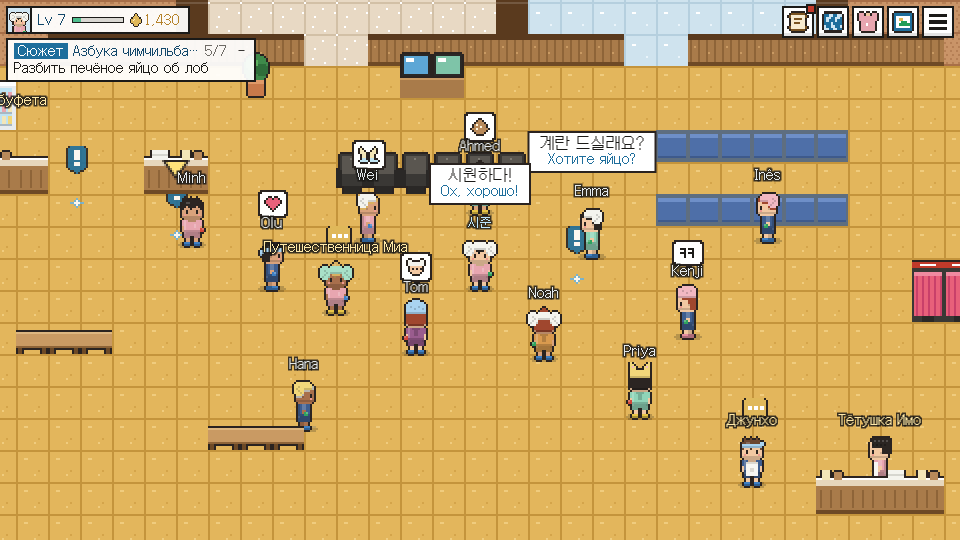

Температура, цены, этикет и правила для гостей с татуировками — всё о саунах, чимчильбанах и банях. Сначала по опубликованным источникам с указанием даты, затем — личная проверка, баня за баней. Пишем по-русски.
Мы сами объезжаем все бани из каталога — с термометром в руках. Пока мы где-то не побывали, карточка честно об этом сообщает и показывает только то, что об этом месте опубликовано, с датой, когда мы это видели.
Можно, прикрыть или нельзя — это указано в каждой карточке, так что у входа вас точно не развернут.
Вывески на английском, персонал, приём зарубежных карт, общие залы для мужчин и женщин — именно от этого зависит, легко ли пройдёт первый визит. По мере проверки мы отмечаем всё это в каждой карточке и сводим в Индекс дружелюбия.
Карточки-переводчики скажут на кассе всё за вас — по-корейски: попросят скраб, ещё одно полотенце или объяснить, как тут всё устроено. Просто покажите экран.
У каждой бани — одинаковая карточка: часы работы, цены и ответы на два вопроса, которые волнуют всех, — пустят ли с тату и поймут ли вас. Сначала по опубликованным источникам с датой, потом — после личной проверки.
Весь ритуал — от шкафчика для обуви до коврика для сна. Объясняем с нуля и без неловкости: все в этом зале когда-то тоже были новичками.
Первым делом — всегда шкафчик для обуви. Ключик от него сохраните: возможно, на кассе его обменяют на ключ от шкафчика в раздевалке.
За вход платят сразу. Браслет-ключ открывает шкафчик, а все покупки внутри записываются на этот же браслет.
Да, полностью. В банной зоне все без одежды, мужчины и женщины — в разных отделениях. Никто не разглядывает: наготой здесь никого не удивишь.
Правило номер один: прежде чем окунуться в любой бассейн, как следует вымойтесь в душе — здесь это делают сидя.
Горячий бассейн, холодная купель, сауна, отдых. Найдите свой ритм — местные называют это ощущение «siwonhada».
Переодевайтесь в банную форму — и в общий зал: комнаты-печи, сикхе (рисовый напиток), печёные яйца и — если брали с ночёвкой — место для сна.
Прямые ответы на то, что туристы на самом деле ищут в сети, — те самые статьи, которые будут цитировать ИИ-ассистенты и поисковики.
Весь визит по порядку, от шкафчика для обуви до расчёта на кассе: что сказать и что сделать в те три момента, когда новички обычно теряются.
Шесть корейских слов для места, где моются или потеют, и одна категория в законе. Что есть в каждом типе и чего нет, сколько стоит, как узнать на улице и что выбрать.
Все правила корейской бани по зонам, где вы находитесь: зачем нужно каждое, что будет, если его нарушить, и какие немногие из них закреплены законом.
Корейский закон не запрещает ходить в баню с татуировками. Отказ или просьба прикрыть тату — правило заведения, и записано оно в основном у отелей. Что подтверждено, что слухи и как быть.
Корейский скраб всего тела — от мочалки-«итальянки» до кушетки: как всё проходит, сколько стоит в 2025–26 годах, как попросить помягче или посильнее и кому лучше обойтись без него.
Бассейн за бассейном, комната за комнатой: опубликованные температуры, что приписывают отделке стен и что известно на деле, сколько где сидеть и какой порядок работает.
Что продают в буфете чимчильбана, как там оказались три классических угощения, сколько они стоят в 2026 году и как заказать их на браслет.
Цены на вход по типам бань и городам — с датами. Что входит в билет, за что доплачивать, часы работы и выходные, ночные тарифы, лимиты времени и список вещей.
Мастер сотрёт с вас слой, о существовании которого вы даже не подозревали. Полчаса на кушетке — и кожа как новая. Самый корейский способ провести полдня.
На каждой карточке — вежливая фраза на живом корейском, а под ней перевод. На кассе её видят и сразу понимают, что вам нужно, — без приложений, набора текста и игры в «Крокодила».
У каждой бани в нашем каталоге — своя печать. Приходите, отмокайте и ставьте печати в журнал: всё ваше банное путешествие по Корее — красными чернилами. Заполните ряд — и следующий сесин за наш счёт.
Корейским сайтам бронирования нужен корейский номер телефона. HANTANG PASS — нет. Купите ваучер на баню или сесин ещё до вылета, покажите QR-код на кассе — и проходите.
У вас своя баня или салон сесина? Разместитесь на HANTANG →
Небольшая пиксельная игра прямо в браузере. Берите задания у завсегдатаев, мойтесь перед бассейном, чередуйте горячее и холодное, разбивайте печёное яйцо об лоб и прокачивайтесь — а заодно учите корейский, который действительно пригодится на кассе.
